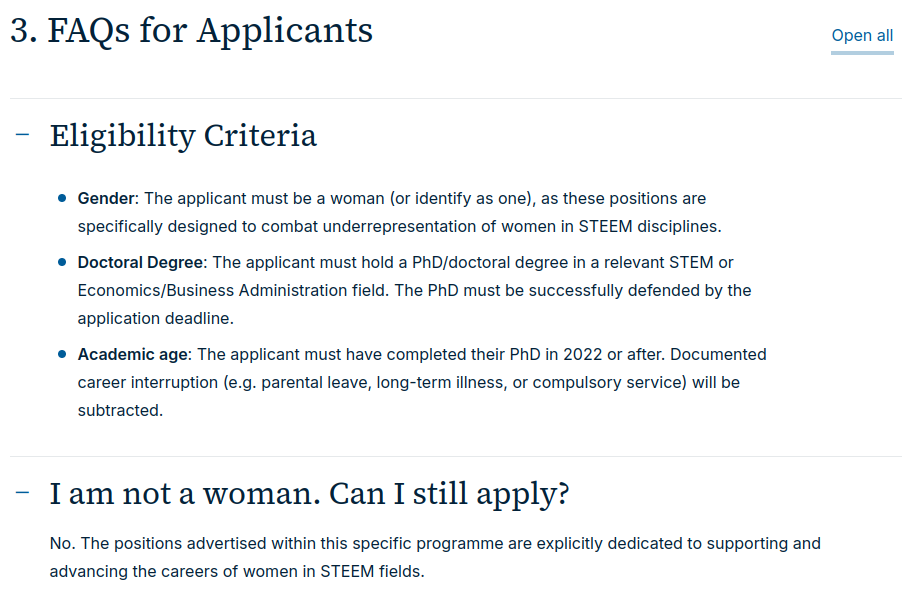

Rant about job applications in academia: requirements, websites, gender criterion
In this post I just wanted to vent/rant quickly about my postdoc job search/application experiences in academia. In the end I ended up going into more details on a gender “discrimination” example I encountered.
Here are my problems with (some) applications:
Too many requirements
A list of possible required documents for applications:
- CV
- Scans of diploma, degrees
- Cover letter
- Recommendation letters (1 to 3 usually) or support letters
- Research statement
- Research proposal, abstract
- CV but in the format of the given country’s template or filled in online form
- Certificate that saying that I have spent more than x months abroad doing research at a university
- Etc…
The first four items are quite reasonable, I am also okay with writing a one-page-long cover letter to make my application more customized. The problem begins when three recommendation letters are requested! It’s just too much to ask, because the potential employer potentially wastes the time of three people. Also, some people might not have three close collaborators or supervisors then the relevance of the recommendation might be less. My impression of places that ask for three letters is that they are lazy to do a proper recruitment (evaluate the applicant based on the interviews and all the other inputs).
Research statement, research proposal are documents in which you need to write 2 to 5 to 10(?) pages about your past/current/future research. This is some higher effort writing, at least if you want to do it conscientiously. My rule is that I only apply to a position where research statement/proposal is necessary if the salary or salary range is indicated and is competitive. Otherwise it’s just not worth the trouble! I did apply to a scholarship where I had to write a proposal and it was a lot of work, lot of back and fourth emails, meetings, meetings with more people… It’s one thing to write 5 pages, but a whole other level to make it fit the requirements of the scholarship, research group, state of the art literature, and all the other small things.
The others are kind of okay requirements but still take some time to obtain and/or organize. In the end, applying to a job is just the first step, usually several interviews follow.
“only apply to a position where research statement/proposal is necessary when the salary or salary range is indicated and is competitive. "
Application websites are sh*t
Not always but I’ve already found two instances when I was trying to apply to a position and their website was subpar. The first time was with a smaller French university. The website was of course just partly English, partly French but it was manageable. I typed in all my details into the forms, collected the necessary documents and attached them on the website. At least I thought I got all the documents. It turned out that I should have also written something like a research statement, but that was not mentioned in the job flyer (a pdf), only on the website. It was near the application deadline, so I decided to continue without this document, just uploading a blank one instead.
Then I clicked on submit…
the little icon inside the button started circling…
without stopping…
and that’s it. I tried to do the whole procedure again, nothing happened.
Something was broken. Okay, I was like I’ll just send my documents through email to the HR contact that was given in the flyer. I got no confirmation of receipt, nor any reply after months. I just failed to apply because of a shitty website. I could have sent emails to the supervisor and the HR contact after a month to ask about my application progress but at that point I felt that it’s just not worth it.
Apparently gender discrimination is okay (kinda)
From time to time I scroll through LinkedIn job ads. That’s when I found an interesting scholarship opportunity called E-STEEM which offers 20 postdoc positions in STEM and economics. But only for women. At first I scrolled over, thinking that okay that’s not for me. But when another job ad came up that was specifically for women, I started to think a bit more about it. I understand that both of these scholarships aimed to improve on the gender imbalance in academia, that is to bring in more women to STEM fields but I just felt like this is not the way to do it.
Here’s the Frequently Asked Questions from the E-STEEM website:

To be honest, at first I was about to rant about this being illegal.
However, I started to look into the EU law (directive) on this matter. Here’s a part of Article 14 of Directive 2006/54/EC of the EU:
Prohibition of discrimination
- There shall be no direct or indirect discrimination on grounds of sex in the public or private sectors, including public bodies, in relation to:
(a) conditions for access to employment, to self-employment or to occupation, including selection criteria and recruitment conditions, whatever the branch of activity and at all levels of the professional hierarchy, including promotion; …
Based on the above, women-only scholarships should be illegal. However, after consulting an LLM, I was pointed to Article 3 of the same directive - Positive Action:
Member States may maintain or adopt measures within the meaning of Article 141(4) of the Treaty with a view to ensuring full equality in practice between men and women in working life.
Where Article 141(4) of the Treaty is
With a view to ensuring full equality in practice between men and women in working life, the principle of equal treatment shall not prevent any Member State from maintaining or adopting measures providing for specific advantages in order to make it easier for the underrepresented sex to pursue a vocational activity or to prevent or compensate for disadvantages in professional careers.
So it seems that women-only scholarships are possible. I am not a lawyer and I won’t dig deeper into laws. My understanding is that the Treaty is a guideline and the different EU countries might implement these directives differently, which would mean I’d need to dive into Austrian laws. I am not going to do that, just assume that women-only scholarships are legal.
However, the Positive action article leaves a lot of room for interpretation. For example, can quotas be employed? That would depend on the scenario. I feel that a near 50-50% female-male ratio in politics would be fair, since the population would be well represented. However, the same ratio would be unfair for a physics postdoc job admission rate (one of the lowest female ratio among disciplines at graduation).
Can gender specific selection criterion be employed during recruitment, as in the case above? I think this also depends on the context but I still feel like this is a very strong action (discriminating against the other gender) so its necessity should be supported by data. Maybe it is actually supported by data but that is not advertised in the FAQ.
In short my bad feeling regarding this scholarship comes from the fact that I feel like that it actually goes against the idea of gender equality. I am not an expert in gender equality actions but there are alternative ways to achieve equality, for example by having woman evaluators in committees(/interviews?) 1.
Lastly, I want to note that I find women’s rights important and there’s still definitely more to do on that area and seeming there are many actions being implemented, e.g. the 2006 EU Directive or the above mentioned women-only scholarships. But in my opinion we should strive towards gender equality with steps that are consistent with its core ideas and we shouldn’t forget about the rights and equal treatment of other genders besides female…
-
Filandri, M., & Pasqua, S. (2021). ‘Being good isn’t good enough’: gender discrimination in Italian academia. Studies in Higher Education, 46(8), 1533-1551. ↩︎